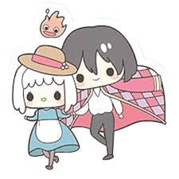
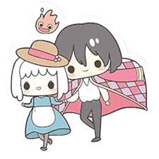

Decían que un corazón puede ser una carga, pero el mío late impulsado por la creatividad y la curiosidad. Hoy elijo convertir mi vida en un proceso constante de aprendizaje, explorando nuevos lenguajes de programación, descubriendo frameworks, comprendiendo bases de datos y creando soluciones con imaginación. Mi sueño es seguir creciendo hasta alcanzar un futuro donde el conocimiento me permita trabajar desde mi hogar, construyendo con libertad aquello que imagino
Cada paso que doy es para construir mi propio camino, idea a idea y esfuerzo a esfuerzo, con la convicción de que todo lo que imagino puede hacerse realidad si trabajo con constancia.